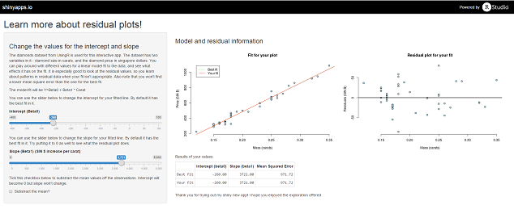

In the regression class, students learn about residual analysis. After fitting a model to data, you can explore the residuals to find out if there is still a pattern in the data. It is very helpful for understanding such residual analysis if you can slightly change a model and see what happens to the residuals.

For this purpose, I developed a shiny app that fits the best-fit model, and the user provided model to the diamonds data from UsingR. This dataset contains 91 observations of diamonds, their price in singapore dollars and their size in carat.